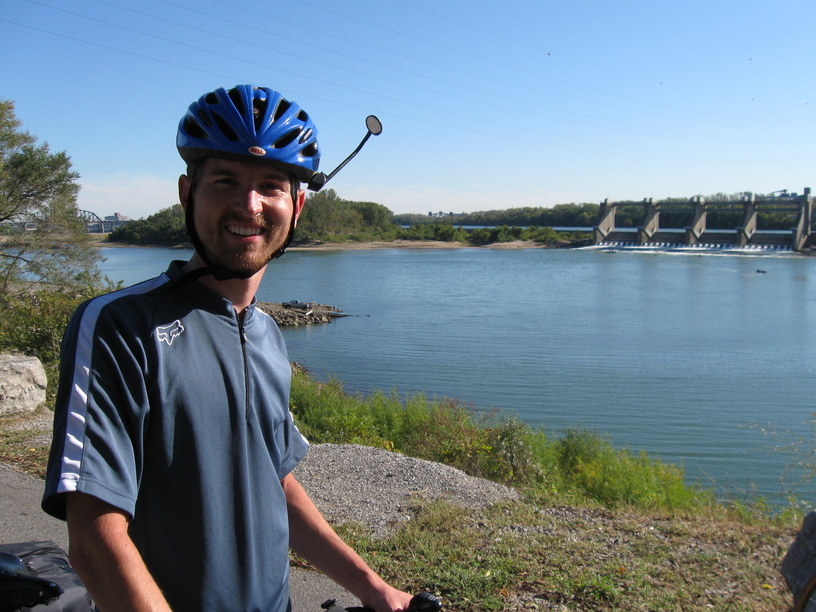
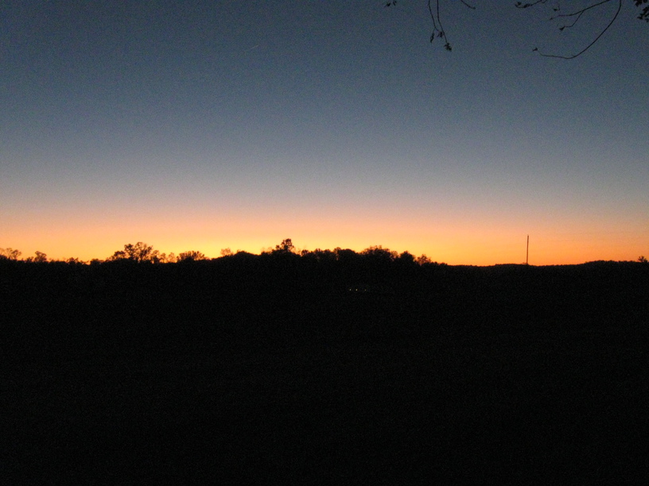

9 Oct 08, Corydon, IN
Yesterday I rode (slowly) through wind & rain to make it to Louisville, where I spent the night with my uncle Bobby's dad and his wife. It was a nice visit, with good food & lots of conversation.
I left today just before noon, stopped at the grocery & Subway on my way out of L'ville, and crossed the Ohio to Indiana. (Actually, Subway was in Indiana.) I saw a bit sign & building for Colgate, and thought I should call Lynn & ask her about her job search. As soon as I thought it, though, I realized I had forgotten my phone at the Rowans', so I turned around & rode back. So today involved an extra 20 miles & 2 river crossings than it had to, but I have my phone. It's funny, because I didn't really feel upset or disappointed, it was just a fact—I had forgotten the phone, and I had to go back for it. In the end, it might have been a blessing in disguise, because on my ride out of Jeffersonville, another cyclists, Richard, rode up & asked about my trip. He was really friendly, and led me through Clarksville & New Albany, IN, pointing out various points of interest along the way. He was quite the cyclist, also—he rode with me up the steep hill out of New Albany on his fixed gear bike. It was fun to have someone to ride with, and especially to help take my mind off the climb.

